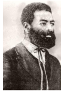
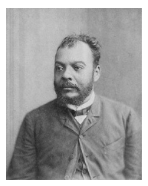
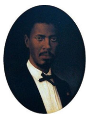

Capítulo 4: Estudo sobre a criação das identidades, sobre alteridade e diversidade cultural.
Na contemporaneidade a questão identitária assumiu contornos jamais vistos, sendo em muitos casos a expressão das lutas travadas entre grupos sociopolíticos dentro de uma mesma sociedade, estando diretamente relacionadas com o desejo de reconhecimento e participação por parte de parcelas até então invisibilizadas socialmente. Trata-se da alteridade buscada por segmentos específicos da sociedade, do reconhecimento da diversidade cultural, das mais diferentes expressões de vida e participação na sociedade e do reconhecimento público dos valores das minorias ou grupos desfavorecidos social e economicamente. E você, saberia dar exemplos sobre a questão identitária e a diversidade cultural na cidade onde mora?
Contextualizando – Indústria Têxtil e Descolonização
Todos nos lembramos das imagens de Ghandi, sentado em frente à sua roca e a fiar o tecido, corporizando o espírito indiano da indústria e independência.
A Índia já era, nessa época, um dos maiores produtores mundiais de algodão, mas Ghandi quis mostrar que este país tinha o potencial para subir mais alto na cadeia da indústria têxtil.
A Índia viria a tornar-se independente em 1947, e actualmente esse simbolismo permanece na bandeira deste país, através da roda de fiar azul, bem adequada a uma nação que tem nos têxteis 30% das suas exportações totais.
Em 2000, o número de habitantes da Índia atingiu os 1.000 milhões, tendo quadruplicado desde o início do século passado, e triplicado nos últimos 50 anos.
Actualmente, a população indiana cresce ao impressionante ritmo de 2% por ano, o que equivale a mais 20 milhões de pessoas a cada ano que passa.
Se esta taxa continuar, a Índia terá mais de 1,2 mil milhões de habitantes em 2015, tornando-se o país mais populoso do mundo e ultrapassando mesmo a China.
Calcula-se que cerca de 30 milhões de pessoas trabalhem nesta indústria na Índia, que é de longe a maior empregadora neste país.
Fonte: https://www.portugaltextil.com/a-industria-textil-na-india-%C2%96-parte-1/
O período pós Segunda Guerra Mundial foi marcado pelos processos de independência das sociedades coloniais da África e da Ásia frente às metrópoles europeias. Países que durante décadas estiveram sob a jurisdição de metrópoles que lhes retiravam as riquezas em nome da construção de uma pretensa civilidade aos moldes europeus, agora intensificavam as lutas pela liberdade.
O processo de descolonização da África e da Ásia se desenrolou ao longo de todo o século XX, mas foi na sua segunda metade que se tornou mais intenso. No ano de 1947 a Índia tornou-se independente da Inglaterra, tendo na figura de Gandhi um dos seus maiores líderes, empenhado em uma resistência pacífica aos seus opressores.
Além de Gandhi, outros nomes tornaram-se muito conhecidos no período por terem atuado de diferentes maneiras no processo de desocupação e independência de seus países. No Quênia, JomoKenyatta teve papel de destaque e é considerado como o pai da nação queniana. Na África do Sul, Nelson Mandela desempenhou papel similar ao defender os direitos da população negra e propor a independência do país.
Com o passar do tempo as sociedades que estiveram subjugadas passaram a reforçar a sua identidade através da valorização das práticas e dos costumes locais, abrindo mão de muitos dos preceitos estéticos e das formas de pensar e agir dos europeus. Neste ínterim é reforçado o sentimento de identidade entre as pessoas, passando este a desempenhar um importante papel na busca pela reconstrução destes países que muitas vezes passaram por processos traumáticos de guerra civil no pós independência.
Reconstruindo conhecimentos
No ano de 1955, na cidade de Bandung na Indonésia, teve curso um dos momentos mais significativos na história das nações que lutavam pelo seu reconhecimento político e sua independência. Trata-se da Conferência de Bandung, que reuniu países asiáticos e africanos que posicionavam-se contra a política neocolonialista verificada no pós-segunda Guerra Mundial.
Um dos pontos mais importantes foi a criação do Tribunal da descolonização para julgar os acusados de crimes contra a humanidade. Entre as lideranças de grande representatividade está o nome do presidente egípcio Gamal Abdel Nasser, um dos líderes do pan-arabismo, um movimento de unidade entre as nações de língua árabe em favor de interesses comuns.
O mesmo aconteceu entre as nações africanas, trata-se do chamado pan-africanismo, movimento que propunha a união dos países africanos em nome da defesa dos seus direitos. Este movimento teve repercussão em diversos países fora do continente africano, inclusive no Brasil, onde se destacou a figura de Abdias Nascimento.
Quem é?
Mapa da cidade de Lima, Peru.
http://arqueologiacolonial.blogspot.com.br/2012/01/planos-antiguos-de-la-ciudad-de-lima.html
Abdias Nascimento foi poeta, ator, escritor, dramaturgo, artista plástico, professor universitário, político e ativista dos direitos civis e humanos das populações negras. Foi professor emérito na Universidade do Estado de Nova York e professor titular de 1971 a 1981, fundando a cadeira de Cultura Africana no Novo Mundo no Centro de Estudos Porto-Riquenhos e professor convidado do departamento de Línguas e Literaturas Africanas da Universidade de Ife, em IleIfe, Nigéria. Considerado um dos maiores expoentes da cultura negra no Brasil e no mundo, fundou entidades pioneiras como o Teatro Experimental do Negro (TEN), o Museu da Arte Negra (MAN) e o Instituto de Pesquisas e Estudos Afro-Brasileiros (IPEAFRO). Foi um idealizador do Memorial Zumbi e do Movimento Negro Unificado (MNU) e atuou em movimentos nacionais e internacionais como a Frente Negra Brasileira, a Negritude e o Pan-Africanismo. Foi um dos maiores defensores da defesa da cultura e igualdade para as populações afrodescendentes no Brasil, nome de grande importância para a reflexão e atividade sobre a questão do negro na sociedade brasileira. Após a volta do exílio (1968-1978), insere-se na vida política (foi deputado federal de 1983 a 1987, e senador da República de 1997 a 1999 assumindo a vaga após a morte de Darcy Ribeiro). Em 2006, em São Paulo, criou o dia 20 de Novembro como o dia oficial da consciência negra.
http://www.geledes.org.br/hoje-na-historia-14-de-marco-de-1914-nascia-abdias-nascimento/#gs.ES7ue0s
No Brasil, o movimento negro tem as suas raízes nas lutas empreendidas pelas populações escravizadas que buscavam a liberdade diante da situação que lhes era imposta. Vemos que desde os primórdios da colonização do Brasil, As populações negras trazidas da África sublevaram-se e fugiram da escravidão criando quilombos no interior do Estado.
Doutra parte, já no século XIX, muitos artistas, intelectuais e políticos do período aderiram a causa abolicionista. Nomes como os do jurista Antônio Bento em São Paulo e do poeta Baiano Castro Alves somaram a outros tantos que lutavam em favor do reconhecimento da igualdade e pelo fim da escravidão em nosso país.
Intelectuais negros do mesmo período como são os casos do engenheiro André Rebouças, do jornalista José do Patrocínio e do jurista Luís Gama, são de grande importância parra compreendermos como se deus este processo que muitas vezes fica reduzido a fatos e datas que, apesar da sua importância, tiram o foco de pessoas que se destacaram pela causa da abolição.
Luiz Gonzaga Pinto da Gama, baiano de nascimento, era filho de uma negra livre e pai branco, lusitano. No entanto, mesmo tendo nascido livre, foi feito escravo aos 10 anos de idade e assim permaneceu até os 17, quando conseguiu provar que nascera de ventre livre. Tornou-se jornalista, advogado e escritor literário. 
José Carlos do Patrocínio era filho de um clérigo do município de Goitacazes no Rio de Janeiro, com uma escrava. Tendo nascido escravo, cresceu como liberto e protegido pelo pai. Conseguiu ingressar no curso de Farmácia, que concluiu em 1874. No tempo de estudante, entrou em contato com o republicanismo e o abolicionismo. No ano de 1875 começou sua atividade jornalística. 
André Rebouças era filho de um mestiço notório à época do Império, Antônio Pereira Rebouças, que chegou a ser conselheiro de Dom Pedro II. Formou-se em engenharia e também se notabilizou pela atividade jornalística. Escreveu sobre a necessidade de projetos para inserir os negros libertos em novas formas de relações sociais e no universo do trabalho livre. 
Já no século XX, o movimento pelo reconhecimento das identidades culturais de grupos minoritários passou a se intensificar no Brasil e no mundo. Neste ponto é importante trazermos uma definição do que se entende por identidade cultural. O termo identidade cultural ganhou notoriedade nos estudos que envolvem os valores de determinados grupos dentro de uma sociedade, valores estes que podem se abalados pelo desenvolvimento do processo de globalização e por todos os incrementos tecnológicos que dizem respeito as mudanças nas formas com que as pessoas compreendem e relacionam-se nas mais diversas situações de suas vidas.
Por outro lado, a discussão a respeito das identidades aponta no sentido de não se compreendê-las como algo acabado e imutável. Pelo contrário, as identidades e a própria cultura se modificam dando espaço para outras formas de expressão condizentes com os aspectos mais significativos da participação feita pelos diferentes grupos na sociedade contemporânea.
Alguns teóricos acrescentam que existem mesmo verdadeiras lutas pelo reconhecimento da identidade posto que através disto tornar-se-ia possível a participação política capaz de fazer com que sejam cumpridos os pressupostos básicos da cidadania dentro de uma sociedade que passaria a valorizar e reconhecer de forma plena a diversidade cultural e a alteridade dos grupos envolvidos nestes processos.
Podemos utilizar como exemplo as leis estaduais e federais que foram criadas em favor do reconhecimento da cultura surda e da Língua Brasileira de Sinais – LIBRAS. Trata-se realmente de uma cultura surda, uma forma relacionar-se e de compreender o mundo muito característico deste grupo. Contudo, entende-se também que a comunidade surda estende-se aos familiares, amigos e demais pessoas que demonstram os mesmos interesses do grupo em questão.
O movimento feminista é outro que conseguiu consolidar ao longo do tempo uma luta constante pelo reconhecimento das mulheres como pessoas que tem os mesmos direitos dos homens. As características do movimento feminista variaram no tempo e no espaço. Hoje uma das suas principais bandeiras de luta é contra a violência perpetrada sobre as mulheres.
http://agenciabrasil.ebc.com.br/direitos-humanos/noticia/2015-03/aprovacao-do-feminicidio-e-avanco-na-luta-das-mulheres-dizem
No Brasil, o Movimento Negro ganhou grande notoriedade na década de 1970 enquanto coletivo de luta social e política. Hoje, a identidade negra está se difundindo através da valorização de elementos significativos da cultura e que remontam as questões étnicas e de ancestralidade, bem como através dos aspectos estéticos relacionados a moda e a beleza.
Se até algum tempo atrás era difícil ver pessoas negras usando roupas com motivos étnicos como saias ou turbantes típicos dos diferentes grupos africanos, hoje isto já não é verdade. Nas ruas das grandes cidades é bastante comum vermos pessoas que introduziram este tipo de vestimenta no seu cotidiano. São roupas de inspiração cultural que trazem estampados motivos gráficos inspirados naqueles que são utilizados pelas populações africanas.
Muito do que hoje temos em termos mundiais como sendo algo bastante natural em relação a expressão da cultura em diferentes locais ou situações, pode ser entendido na realidade como sendo o resultado de intrincadas relações de tensão e disputas pelo reconhecimento e pelo poder de narrar a sim mesmo. Trata-se da iniciativa de se tornar livre das preconcepções características daqueles que detém o poder de contar o passado e, portanto, de balizar o presente. Trata-se, inequivocamente, do desejo de fazer dos diferentes modos de vida, das várias formas de manifestação cultural, expressões autênticas e livres de preconceitos, devendo ter os seus princípios respeitados por todos.
Militantes de entidades relacionadas ao movimento negro articularam-se em 1978 para a realização do ato público motivado pelo assassinato de um jovem negro.
http://www.revistadehistoria.com.br/secao/na-rhbn/orgulho-da-cor-1
Ação e reflexão
Encontre e ouça a música “Inclassificáveis” de Arnaldo Antunes.
Na música inclassificáveis de Arnaldo Antunes, que você viu e ouviu cantada por Ney Matogrosso, temos uma série de referências ao processo de formação do povo brasileiro. Desde a teoria clássica de somos simplesmente a junção de três grupos étnicos distintos, brancos, índios e negros e posteriormente as suas miscigenações, até o extravasamento dos sentidos e a criação de novos termos para designar o multiculturalismo que caracteriza nosso país.
Faça uma pesquisa a respeito do processo de ocupação do território, e da formação étnica na cidade ou Estado em que você vive e busque identificar as principais expressões da cultura dos grupos presentes na região. Aproveite para identificar na sua família ou entre as pessoas que você conhece, se elas sabem coisas a respeito das suas origens étnicas ou se tem algum hábito relacionado a isso. Veja também como elas se posicionam frente os movimentos ligados as questões identitárias e de valorização da diversidade cultural.
O que aprendi
Neste capítulo você aprendeu sobre como as questões ligadas as identidades dos grupos humanos adquiriu um significado de extrema importância com o passar do tempo, podendo se percebidas entre sociedades distintas ou ainda entre grupos dentro de uma mesma sociedade. A busca pelo reconhecimento da alteridade das minorias ou de pessoas ou ainda grupos que sofrem algum tipo de discriminação ou preconceito é um dos pontos de apoio nas campanhas em favor do reconhecimento e respeito a diversidade cultural.
Ao longo do século XX foram várias as questões em torno das identidades, principalmente a partir do processo de descolonização efetivado após a Segunda Guerra Mundial nas colônias europeias da Ásia e da África. Nomes como o do indiano Mahatma Gandhi na índia tornaram-se a expressão do sentimento de liberdade dos povos colonizados.
No ano de 1955, a conferência de Bandung reuniu países em busca da integridade e do respeito a sua autonomia política e econômica. Tomam fôlego neste período os movimentos pró-arabismo e pró-africanismo, inclusive com expressão fora dos locais de origem como, por exemplo, no Brasil, onde os ideais do movimento em favor da unidade africana foram expressos através da figura do intelectual Abdias Nascimento.
Contudo, a campanha em favor da cultura e da liberdade da população negra no Brasil já fazia-se presente desde muito tempo, deixando um legado em que os intelectuais negros fizeram-se presentes.
Ao longo do século XX cresce o número de movimentos que buscaram o reconhecimento de sua identidade e da sua cultura. Muitos deles expressaram-se através de protestos que reivindicavam melhores condições de vida, segurança e igualdade de direitos, como é o caso do movimento feminista, de forte presença nas cidades brasileiras